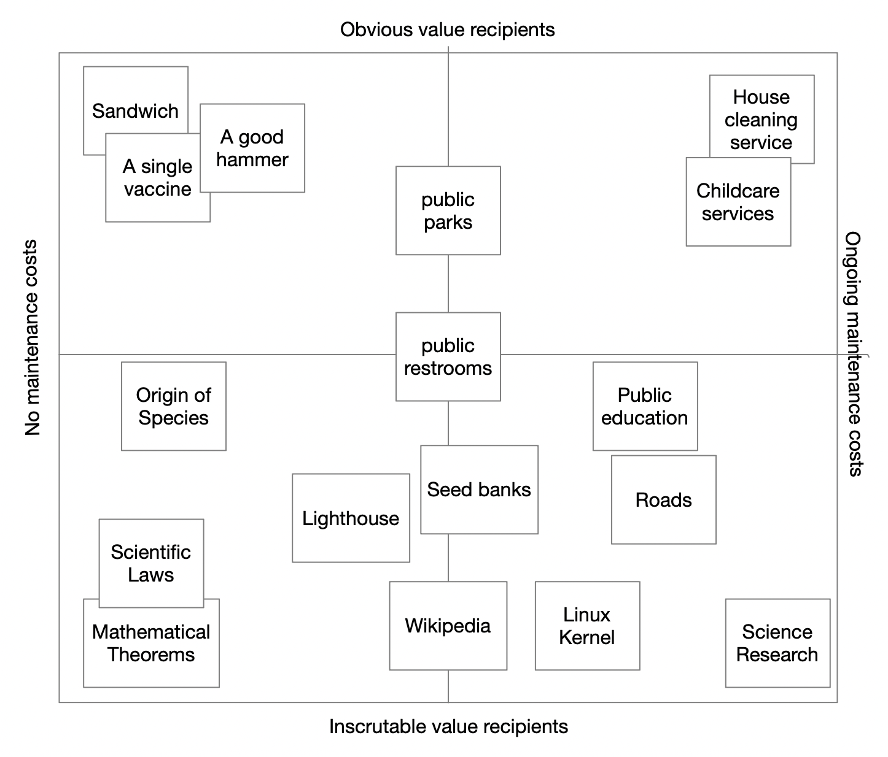

A Public Goods Purity Test

In response to Vitalik's latest blog post.
Many examples of public goods seem to be things that I might describe as “goods that have an unknowable amount of value created for an unknowable group of recipients.” The spectrum that we often seem to wrestle with is maybe how much continuous maintenance/service is involved in keeping that good available.
I think this framing could help us be a little more open about how to treat things within different points in that spectrum, while also giving us a framework to prefer and encourage more of the more pure (lower maintenance, less value captured) types of goods.

I can’t help but notice how this kind of scenario seems like a good fit for a type of auction I made up/discovered (The “MATT Auction”). When you have someone trying to decide whether to produce a value, and there might be a variable amount of interest in that value created, to a group who deserve to be concerned with the fairness of their contribution size.
I went with a small prototyping team to the popup city Edge Lanna and shared a sort of event crowdfunding platform called Propel that included a similar structure that I think it could be easily modified to have the following characteristics. Propel had the basic qualities of an auction in that category:
- A value creator/proposer states a thing they’d like to do.
- That value creator can share their proposal wherever people will listen to them.
- People who would receive some value from that project can bid what they’d be willing to pay for this thing to be done (this bid can even be expressed as a subscription payment).
- Optionally: These bids can be private, very trivially, since the bid commitments are signed offchain messages.
- Once the seller has enough bids to justify their effort, they redeem all the bids.
- Optionally: issue receipts/tickets/NFTs representing their contribution.
- Optionally: All bids are cleared at the same price, so all bidders are assured they pay no more than any other bidder.
- Many reviewers of the MATT auction pointed out that this cannot ensure that anyone is excluded from access to the good, but that's already a safe assumption for the whole category of goods we're discussing here.
If you wanted to fund a lighthouse in this model, you’d probably use a subscription based bid model, and once enough individuals pledged a fee sufficient to build and then maintain the light house, the lighthouse would be built and maintained at a price that everyone agreed was worth it to them.
If at a later point, some of the subscribers felt they were paying an undue portion of the fee, they could adjust their bid rate. If they had been the lowest bidder, this might actually drop the price for everyone. This might actually fall below the threshold of the service provider’s willingness to provide the service, and they might need to withhold service until the subscription pool met their target (their own bid). They might be willing to bend their price. A true public good would probably have someone come out of the woodwork to bid the difference. Or maybe an upstart would-be lighthouseman would appeal to all the bidders to shift their subscription.
Users should be able to create exclusive-or (XOR) bids, like “I’ll pay for this lighthouse or that one, and not both, whichever is cheaper”. If a new upstart came along during a strike and were willing to do it for less on an ongoing basis, I guess they’d be able to.
A system like this can still serve small scale needs: Bidding on a github issue to be resolved, or a feature to be added. A database to be maintained.
In a way, the whole dependency graph of our existence (food, water, shelter, repair, transportation, internet, communications tools, etc...) could be considered a big stack of goods we depend on, some of which may have “public goods” (lower maintenance) properties, and in turn just require that they are (as often as possible) engaged in a sort of competitive negotiation or type of market that maximizes the amount of goods produced for the available contribution.
Since contributions could be streaming subscription bids, and services might themselves need to subscribe to other services, allowing these subscriptions to flow and even easily re-route around service disruptions, or towards new opportunities, would all be ideally part of the continuous bidding system that built this graph (service value in one direction, patronage in the other).
One problem I’ve seen basically every time someone tries to do “supply chain on the blockchain” is the problem of certifying equivalent goods. It’s awesome because identity congruity across a distributed system is also a Hard problem, and I would suggest these are basically the same problem. The naïve answer is always to make a new registry. Heck, the greedy answer is to race to author a new registry so people depend on your opinion downstream, you become a trusted brand, and you inevitably sell influence in at least subtle ways you don’t even notice.
A registry with some central party maintaining it inherently excludes diversity and evolution in disconnected portions of the social network. A true p2p commerce protocol must be friendly to any individual agent, even one not previously established in the network, to be able to begin to create new markets with their own newly establishing network. While “having a certified alternative” is appealing if you have a central authority you trust, it is insufficient if that central authority does not include local options you’re open to, or if it certifies bad products, and to solve those issues, we need p2p network topologies that prioritize local perspective, and establishing the individual user as the “root of trust” of their own network of agreements.
Bringing it back to open source: We often treat software creation like either a business or a hobby, and I think in some ways Vitalik’s post asks for a space inbetween, and I think that request should resonate widely since the most commonly reposted xkcd I ever see is about a thankless programmer in Nebraska. A pretty simple alternative framework is treating maintenance more like a service profession. The more ongoing maintenance is required, the more continuous funding is needed for beyond-hobby maintenance. The more continuous funding, the more concern there is about whether the funding is being effectively allocated, or unfairly captured, etc.
This framework seems to also work as a way to negotiate prices for most of the “Public Goods That Are Hard to Call Open Source”. A strong exception is clean air, partly because not only is it hard to discern the benefactors of the value, it’s hard to discern the contributors to air quality (or detractors, and how would you penalize detractors?).
Open science/research seems to be in a uniquely pure category of public good because its value arguably sustains regardless of maintenance. The very finest open source would theoretically be tiny modules that are so reliable that they never require updates, and I think this would ascend to the highest level of public good. Most other things involve some degree of maintenance, and in turn subscription costs, but I guess there’s a whole other discussion about how to raise more things into that highest category: A question that for me evokes some of the early Ethereum ideas like “a self-owning taxi”: an idealized dream where even a complex service-like good might be so autonomously sustainable that proper mechanisms are able for it to spread its value as widely as possible at the smallest possible cost to the society that enabled it.
Making a system like an autonomous taxi sustainable is a more complicated question, but still maybe in the same category. I suspect that making more complex systems into self-sustaining ones will require increased ecological dynamism that allows the service provider to organically form, adapt, and leverage cycles of inter-enablement that can unlock booms of new benefit to those involved in the cycle. I think Ethan Buchman has written and spoken wonderfully about the power of financial cycles, and is exploring it with his current project Cycles.Money, and I think more projects should look at the implications of what those types of cycles can unlock for whatever problems they’re concerned with addressing.
Given we have many pressing problems today, I think it’s worth exploring the low-hanging category: What are kinds of research that can be conducted and shared broadly today that can enable rapidly locally deployed solutions to various problems? The example of open source air filtration research is a good one. A person or group who wanted to continue iterating on an open source design might declare they’re seeking funding for the ongoing effort. Or a platform could be designed that allowed people to pledge funding to hypothetical accounts should they ever be registered, but this depends on some kind of account-verification infrastructure. This might be a good use of things like zkTLS.
Another example of research in a very similar category I’d like to see is increasingly open source research on alternative food production techniques. Vertical and hydroponic gardening has been undergoing an innovation boom, but has limitations for the kinds of nutrition it tends to be good at producing (not a lot of carbs or protein). Water capture and desalination would be other great areas to have more open designs available for.
To build these types of projects, we basically need people willing to adopt a model of work where they work in public, and accept funds from contributors to continue that work. This isn’t very different from a Patreon model, but Patreon falls short in a pretty basic way: It’s just a way to pile up as much funding as you can get, and doesn’t utilize any game mechanics to ensure that funding is minimized across funders: It’s just a game of how much funding you can accrue. This is great for the top producers, but probably results in fewer total things being produced. If the producers were able to just name their target funding rate, let the crowd split it up as widely as needed, and live within those means, we might be able to produce far more open source/public goods while also supporting far more creators/researchers.
Anyways, reviewing my thoughts here, I think the most useful one in response to Vitalik’s blog post was that rather than fully transitioning focus from “public goods” to “open source”, to recognize that public goods exist at the far edge of a spectrum of “goods that have an unknowable amount of value created for an unknowable group of recipients.” (open to a more concise verbiage). The purest public goods like open science research exist at the extreme end of an axis where there is effectively no maintenance cost for the contribution. Drawing from that framework, we can and should:
- prioritize funding these longer-lasting types of goods
- explore how to build more things in a way that achieves lower-maintenance sustainability
- continue exploring and building improved mechanisms for funding the many things that actually do require ongoing maintenance even when they serve an illegible group.